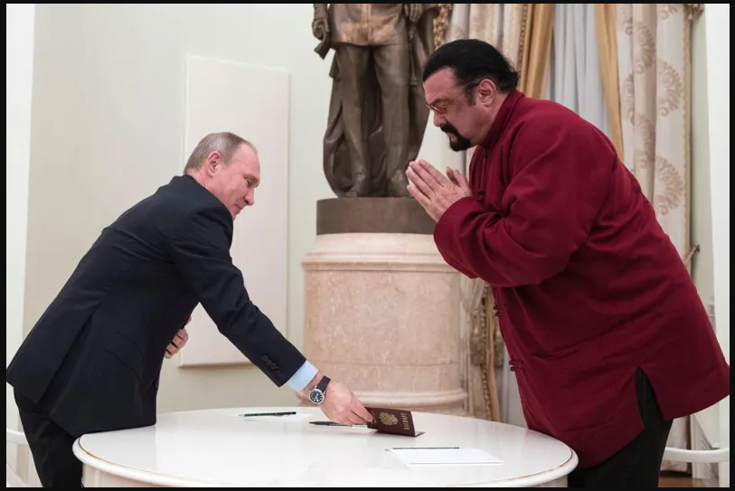

პუტინმა სტივენ სიგალი მეგობრობის ორდენით დააჯილდოვა
"მსახიობი და რუსეთის საგარეო საქმეთა სამინისტროს სპეციალური წარმომადგენელი შეერთებულ შტატებთან და იაპონიასთან ჰუმანიტარული ურთიერთობების საკითხებში სტივენ სიგალი მეგობრობის ორდენით დაჯილდოვდა. პრეზიდენტის ვლადიმერ პუტინის შესაბამისი ბრძანება განთავსებულია იურიდიულ საინფორმაციო პორტალზე" - წერს რუსული მედია. "სიგალი დაჯილდოვებულია საერთაშორისო კულტურული და ჰუმანიტარული თანამშრომლობის განვითარებაში შეტანილი დიდი წვლილისთვის" - ნათქვამია დოკუმენტში.20:14 / 27-02-2023 პუტინმა სტივენ სიგალი მეგობრობის ორდენით დააჯილდოვა "მსახიობი და რუსეთის საგარეო საქმეთა სამინისტროს სპეციალური წარმომადგენელი შეერთებულ შტატებთან და იაპონიასთან ჰუმანიტარული ურთიერთობების საკითხებში სტივენ სიგალი მეგობრობის ორდენით დაჯილდოვდა. პრეზიდენტის ვლადიმერ პუტინის შესაბამისი ბრძანება განთავსებულია იურიდიულ საინფორმაციო პორტალზე" - წერს რუსული მედია. "სიგალი დაჯილდოვებულია საერთაშორისო კულტურული და ჰუმანიტარული თანამშრომლობის განვითარებაში შეტანილი დიდი წვლილისთვის" - ნათქვამია დოკუმენტში. სიგალმა რუსეთის მოქალაქეობა 2016 წელს მიიღო, პუტინმა მას პირადად გადასცა პასპორტი. ორი წლის შემდეგ მსახიობი ნებაყოფლობით გახდა საგარეო საქმეთა სამინისტროს სპეციალური წარმომადგენელი.